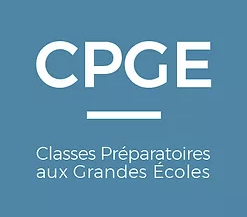
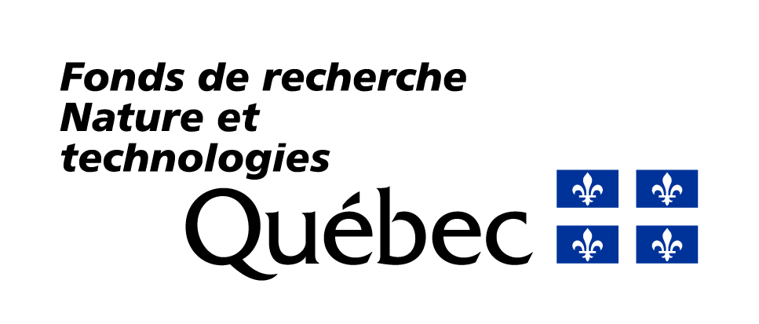
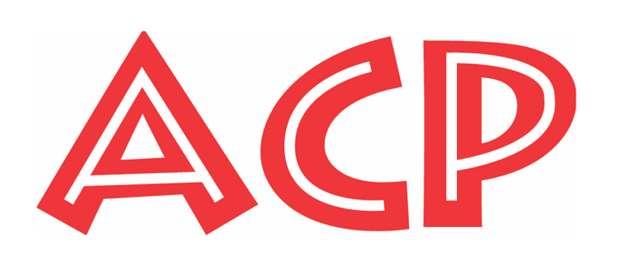

I'm grateful to be supported by a FRQNTdoctoral scholarship for four years.
My current research interest falls at the crossroad of probabilistic modelling, and learning theory. I'm interested in the role of simplicity and compression in shaping the inductive biases of modern learning algorithms.
In-distribution and Out-Of-Distribution generalization
Amortized learning and Meta-learning
I'm also interested in generative modelling and flow-matching, especially for applications in cancer immunotherapy.
I am currently seeking a Full-time Research Scientist / Engineer position — please contact me if you have opportunities.
In a previous researcher life, I worked on Web agents research at Service Now Research. My master's thesis focused on Reinforcement Learning and Combinatorial Optimization. I developed SeaPearl, a fully
functional Open-Source Constraint Programming solver.
Feel free to reach out to me via email if you have any questions or for potential collaborations.
September 2025: I will be serving as a teaching assistant for
the course IFT6390 : Fundamentals of machine learning at
Université de Montréal taught by Dhanya Sridhar and Ioannis Mitliagkas for the Fall 2025 semester.
August 2023: My paper at CP2023 received a Distinguished Paper Award 🏆🏆.
July 2023: I'm proud to announce that I successfully defended my Master Thesis in person at Polytechnique Montréal.
July 2023: My application to the Doctoral Program of CP2023 has been accepted. In the same time, I have been granted a financial grant to attend the conference in person.
March 2023: I received a Mitacs Accelerate scholarship of two units (30K) for my work as a visiting researcher at Service Now.
February 2023: I will be starting a research internship at Service Now Research (Montréal) working on RL-based method for generating adversarial attacks to showcase current LLMs bias and limitations in term of fairness.
September 2022: I will be serving for another semester as a teaching assistant for the course INF8215 : AI : Methods and Algorithms for the Fall 2022 semester.
September 2021: I will be serving as a teaching assistant for the course INF8215 : AI : Methods and Algorithms at Polytechnique Montréal taught by Quentin Cappart for the Fall 2021 semester.
Software Development InternJun. 2020 - Sept. 2020 Dronisos, Bordeaux, France
Developed Harmony, a particle based meta-heuristic that secures massive drone swarms (+500 agents)
Research Area: Meta-heuristics, Force fields.
Papers
You can also find the most up-to-date publications on my Google Scholar page.
We frame the dynamic feature preferences of neural networks as a trade-off between predictive power and model complexity, deriving insights from compression theory.
We propose an explanation for the strong generalization abilities of in-context learning at test time, drawing connections between meta-learning and information theory.
Keywords: Learning Theory, Compression, Meta Learning
BrowserGym is a fully deployed Open-Source Gym environment for Web-Automation.
It serves to evaluate Web Agents at solving a wide range of tasks on the web.
It's a collaboration between
ServiceNow Research,
CMU,
and Mila.
WorkArena is an Open-Source Gym benchmark for evaluating Web Agents on common knowledge tasks in a browser. This research was conducted at ServiceNow Research.
I co-maintained the Open-Source project SeaPearl. It aims to develop an intelligent constraint solver that learns to solve Constraint Optimization Problems via RL on Graphs.
Entirely written in Julia .
More details here.
I am developing a multi-modal Discrete Diffusion Transformer for the co-design of protein sequences and structures.
Targeting the specific task of TCR/Peptide/MHC binding. The aim is to generate de-novo TCR sequences conditioned on a tumor-specific neoantigen.
Keywords: Discrete Diffusion, Protein design, Immunotherapy
I made a code template to quick-start your research project with a fully functional environment and backbones for your codebase. S/o to my amazing collaborators Eric Elmoznino and Tejas Kasetty.
The template includes a lot of nice features such as: Pytorch Lightning ⚡, pre-commit, Hydra, Weights & Biases integration, Github Actions CI ...
This project was carried out in the framework of the IFT6167 seminar led by
Prof. Irina Rish (Mila, Québec).
In this work, we aim to show, regarding Natural Language Sentiment Analysis, that there exists a relationship between model size and robustness to adversarial attacks. Ultimately, uncovering the emergence of power laws and testing the robustness of language model with scale. We evaluate the performance of various Eleuther AI GPT models such as GPT-Neo 125M, GPT-Neo 1.3B, GPT-Neo 2.7B, GPT-J 6B against adversarial attacks. We fined-tuned (trained on adversarial example) our different GPT models on common datasets (Rotten Tomatoes, IMDB...) and evaluated them separately to quantify the effects of scale on adversarial training.
In collaboration with Ph.D. candidate Guillaume Huguet (Mila, Québec), we present our method for non-linear dimensionality reduction called Diffusion Geodesic.
Dimensionality reduction techniques are often used to visualize the underlying geometry of a high-dimensional dataset. These methods usually rely on specific similarity measures. In this project, we first approximate the geodesic distance using a diffusion process over the underlying manifold, then we use Multi-Dimentionnal Scaling combined with our previously defined pairwise 'distances' to embed our Manifold in a lower dimensional space. We compare our model with popular algorithms such as PHATE, UMAP, and Isomap on toy datasets and RNA-seq dataset.
In collaboration with Sariah Al Saati (ENS), Mehdi Benharrats (X-HEC), Swann Chelly (Sorbonne University) and Pierre Tessier, this report proposes a method for the coverage of a rescue zone with a swarm of UAVs.
In collaboration with Pierre Tessier (MS, Columbia University), the objective of our project was to implement an intelligent 2D to 3D Motion Capture mechanism that uses only the video stream of a webcam as input. We were able to animate relatively accurately this Mk-44 Iron Man 3D model.
The project is based on the model DOPE presented in this paper for the automatic 3D rig generation from video input coupled with a quaternion-based 3D rotation inference pipeline for 3D model animation.
In collaboration with Pierre Tessier (MS, Columbia University), the objective of our project is to enable an efficient search in a 3D model bank from simple hand drawings. The project is based on
this paper SIGGRAPH2012.
The project lies on different techniques such as Suggestive Contouring (Canny filter), Gabor filtering (gaussian convolution on Fourier Transformation of the input image) and histogram representation using Visual Vocabulary.
Looking back at this project, I saw that another paper with much more impressive results came out a few years later using Siamese convolutional Neural Networks for feature extraction.
In collaboration with Elsa Deville (MS, Imperial College), the objective of our project is to fully render a realistic 3D marine scene using only randomized procedural modeling (OpenGL).
The project implements different visual elements among them terrain generation using Perlin Noise, a realistic simulation of a fish swarm movement based on this paper and realistic-looking ocean waves (Trochoidal Waves: exact solution of the Euler equations for periodic surface gravity waves).
Bachelor of Science in Applied MathematicsJun. 2018 - May. 2021 Ecole Polytechnique
Ingénieur Polytechnicien X2018
Minor in Computer Science. Ranked 3rd out of 3000+ candidates at the national entrance exam for Ecole Polytechnique, the most prestigious and selective engineering school in France.
Palaiseau, France

CPGE : Higher School Preparatory ClassesJun. 2016 - May. 2018 Lycée public Jean-Baptiste Say
Intensive multi-disciplinary program leading to competitive entrance exams of french Grande Ecoles.
Paris XVI, France
I became a teaching assistant for 6 months (Full Time) for both High School and undergraduate students with underprivileged backgrounds at the Boarding School of Success of Noyon, France.
Grants, Scholarships and Awards

Mar. 2025
FRQNT doctoral training scholarship (4 years)

Sep. 2023
Distinguished Paper Award at CP2023, Toronto


{kind=link}